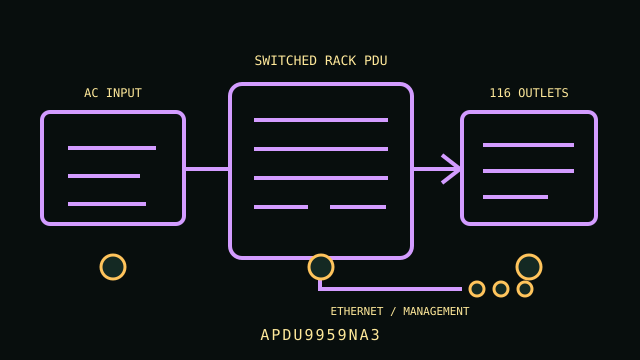

[ NETWORKED / SWITCHED RACK PDU // EXACT SKU ]
APC NetShelter Rack PDU 9000 Switched APDU9959NA3
208 V single-phase, 20 A L6-20P input; 21 C13/C15 + 3 C19/C21 outlets; network-switched, 0U. This static record covers the named model only; confirm complete regional suffix, revision and nameplate before installation.

ARCHIVAL IDENTIFICATION: APDU9959NA3. Record the complete label, serial/date code, firmware and condition; similarly named models are not electrically interchangeable.
Exact model specifications
| SKU / topology | APDU9959NA3 — networked switched rack power distribution unit; no UPS battery or stored runtime. |
|---|---|
| Input and output voltage | 200–208 V AC input; output follows the supplied 208 V source |
| Phase / ampacity | Single phase; 20 A input rating; maximum usable load is limited by nameplate/continuous-load and branch-circuit requirements. |
| Outlet count and type | 24 total: 21 × IEC C13/C15-compatible and 3 × IEC C19/C21-compatible outlets; switched outlet groups (verify exact outlet controls in firmware/manual). |
| Metering / outlet switching | Switched rack PDU with local metering and network-accessible outlet control/status; model-specific metering granularity depends on firmware. |
| Network management | Ethernet-based APC network management for monitoring and switched outlet control; secure the management interface and use current supported firmware. |
| Rack dimensions | Zero-U (0U) vertical rack installation; verify complete assembly length and rack-side clearance using the manufacturer installation manual. |
| Plug and load compatibility | NEMA L6-20P input cord; requires grounded 200–208 V single-phase L6-20R service. C13/C15 and C19/C21 outlet labels are connector families, not permission to exceed the PDU rating; verify each load inlet and voltage. |
| Electrical safety | Input is 20 A, 208 V class; do not infer continuous ampacity above the rating on the nameplate or local code. Preserve protective earth, use an appropriately protected circuit and never connect 120 V-only equipment to 208 V outputs. Installation/service by qualified personnel. |
Service and safe deployment
- Verify voltage, phase, inlet plug, circuit ampacity, continuous load and per-outlet ratings against the PDU nameplate and the exact product manual.
- Use grounded, correctly protected service; never defeat the protective-earth conductor, overload an outlet/bank, or daisy-chain power strips/PDUs.
- Mount the chassis using the manufacturer-approved brackets and preserve ventilation and strain relief. Inspect cord, plugs, receptacles and enclosure for heat, wear or damage.
- Disconnect upstream power before installation, relocation or service. Do not open energized mains equipment; use a qualified electrician where required.
- Network management can switch power to connected systems; isolate management access, set unique credentials and verify firmware before deployment.
Manufacturer sources and manual
- Manufacturer product page — APC NetShelter Rack PDU 9000 Switched APDU9959NA3Manufacturer model listing and configuration details; match the complete SKU and region.
- Manufacturer documentation — NetShelter 9000 Series Switched Rack PDU User GuideManufacturer manual, technical data or specifications; use the revision applicable to the unit label and follow its installation and safety directions.